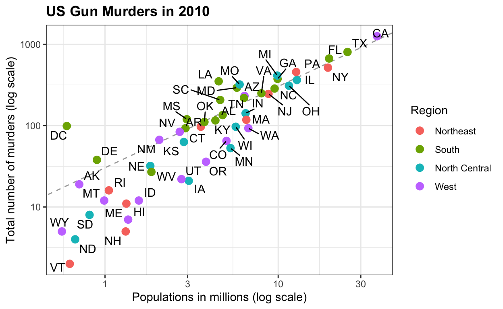
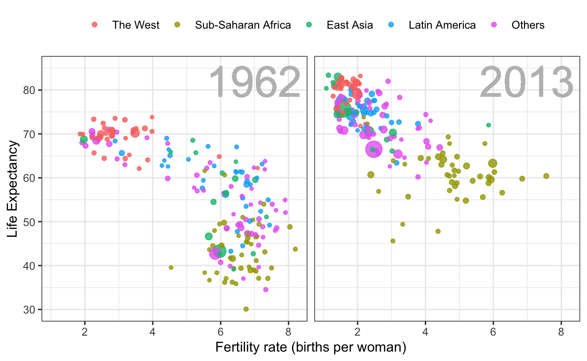
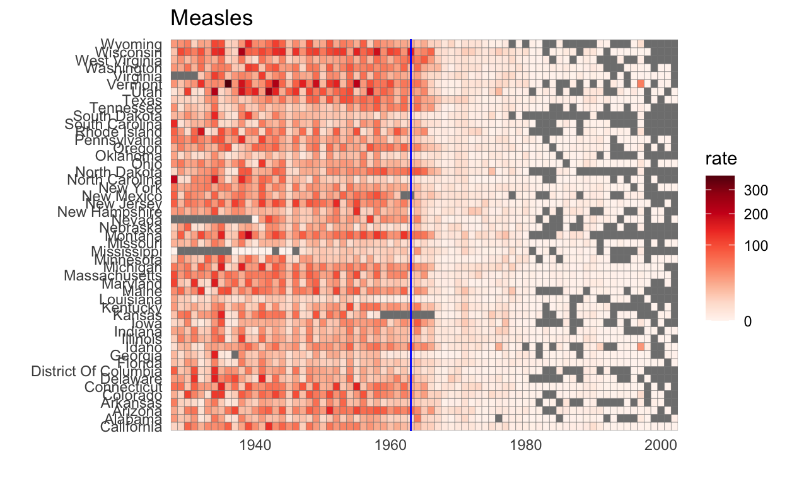
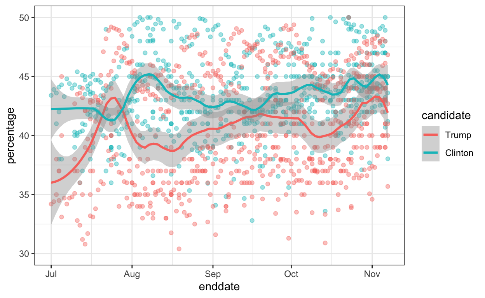
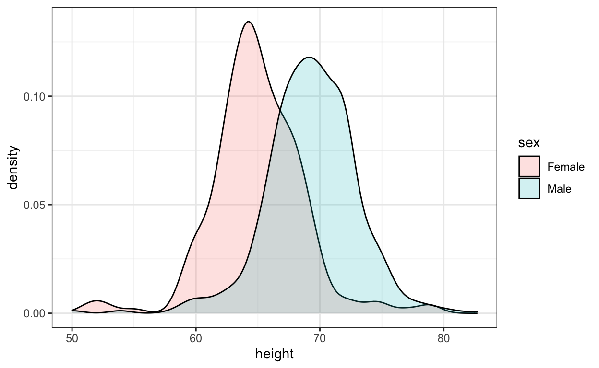
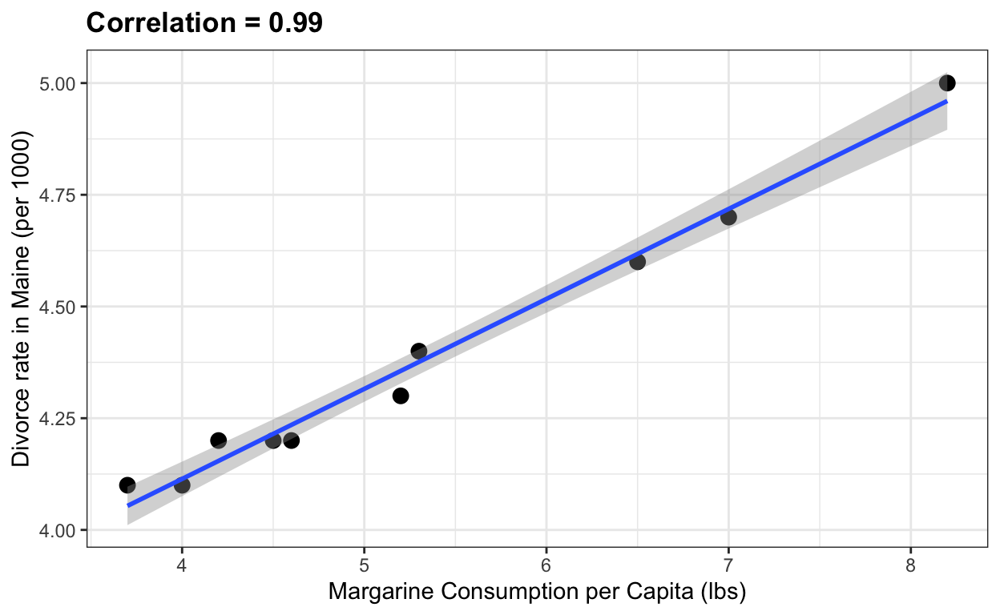

In this post I describe the dslabs package, which contains some datasets that I use in my data science courses.
A much discussed topic in stats education is that computing should play a more prominent role in the curriculum. I strongly agree, but I think the main improvement will come from bringing applications to the forefront and mimicking, as best as possible, the challenges applied statisticians face in real life. I therefore try to avoid using widely used toy examples, such as the mtcars dataset, when I teach data science. However, my experience has been that finding examples that are both realistic, interesting, and appropriate for beginners is not easy. After a few years of teaching I have collected a few datasets that I think fit this criteria. To facilitate their use in introductory classes, I include them in the dslabs package:
install.packages("dslabs")Below I show some example of how you can use these datasets. You can see the datasets that are included here:
Note that the package also includes some of the scripts used to wrangle the data from their original source:
list.files(system.file("script", package = "dslabs")) [1] "make-admissions.R"
[2] "make-brca.R"
[3] "make-brexit_polls.R"
[4] "make-death_prob.R"
[5] "make-divorce_margarine.R"
[6] "make-gapminder-rdas.R"
[7] "make-greenhouse_gases.R"
[8] "make-historic_co2.R"
[9] "make-mnist_27.R"
[10] "make-movielens.R"
[11] "make-murders-rda.R"
[12] "make-na_example-rda.R"
[13] "make-nyc_regents_scores.R"
[14] "make-olive.R"
[15] "make-outlier_example.R"
[16] "make-polls_2008.R"
[17] "make-polls_us_election_2016.R"
[18] "make-reported_heights-rda.R"
[19] "make-research_funding_rates.R"
[20] "make-stars.R"
[21] "make-temp_carbon.R"
[22] "make-tissue-gene-expression.R"
[23] "make-trump_tweets.R"
[24] "make-weekly_us_contagious_diseases.R"
[25] "save-gapminder-example-csv.R" If you want to learn more about how we use these datasets in class, you can read this paper or this online book.
This dataset includes gun murder data for US states in 2012. I use this dataset to introduce the basics of R program.
data("murders")
library(tidyverse)
library(ggthemes)
library(ggrepel)
r <- murders %>%
summarize(pop=sum(population), tot=sum(total)) %>%
mutate(rate = tot/pop*10^6) %>% .$rate
ds_theme_set()
murders %>% ggplot(aes(x = population/10^6, y = total, label = abb)) +
geom_abline(intercept = log10(r), lty=2, col="darkgrey") +
geom_point(aes(color=region), size = 3) +
geom_text_repel() +
scale_x_log10() +
scale_y_log10() +
xlab("Populations in millions (log scale)") +
ylab("Total number of murders (log scale)") +
ggtitle("US Gun Murders in 2010") +
scale_color_discrete(name="Region") 
This dataset includes health and income outcomes for 184 countries from 1960 to 2016. It also includes two character vectors, OECD and OPEC, with the names of OECD and OPEC countries from 2016. I use this dataset to teach data visualization and ggplot2.
data("gapminder")
west <- c("Western Europe","Northern Europe","Southern Europe",
"Northern America","Australia and New Zealand")
gapminder <- gapminder %>%
mutate(group = case_when(
region %in% west ~ "The West",
region %in% c("Eastern Asia", "South-Eastern Asia") ~ "East Asia",
region %in% c("Caribbean", "Central America", "South America") ~ "Latin America",
continent == "Africa" & region != "Northern Africa" ~ "Sub-Saharan Africa",
TRUE ~ "Others"))
gapminder <- gapminder %>%
mutate(group = factor(group, levels = rev(c("Others", "Latin America", "East Asia","Sub-Saharan Africa", "The West"))))
filter(gapminder, year%in%c(1962, 2013) & !is.na(group) &
!is.na(fertility) & !is.na(life_expectancy)) %>%
mutate(population_in_millions = population/10^6) %>%
ggplot( aes(fertility, y=life_expectancy, col = group, size = population_in_millions)) +
geom_point(alpha = 0.8) +
guides(size=FALSE) +
theme(plot.title = element_blank(), legend.title = element_blank()) +
coord_cartesian(ylim = c(30, 85)) +
xlab("Fertility rate (births per woman)") +
ylab("Life Expectancy") +
geom_text(aes(x=7, y=82, label=year), cex=12, color="grey") +
facet_grid(. ~ year) +
theme(strip.background = element_blank(),
strip.text.x = element_blank(),
strip.text.y = element_blank(),
legend.position = "top")
This dataset contains yearly counts for Hepatitis A, measles, mumps, pertussis, polio, rubella, and smallpox for US states. Original data courtesy of Tycho Project. I use it to show ways one can plot more than 2 dimensions.
library(RColorBrewer)
data("us_contagious_diseases")
the_disease <- "Measles"
us_contagious_diseases %>%
filter(!state%in%c("Hawaii","Alaska") & disease == the_disease) %>%
mutate(rate = count / population * 10000 * 52 / weeks_reporting) %>%
mutate(state = reorder(state, rate)) %>%
ggplot(aes(year, state, fill = rate)) +
geom_tile(color = "grey50") +
scale_x_continuous(expand=c(0,0)) +
scale_fill_gradientn(colors = brewer.pal(9, "Reds"), trans = "sqrt") +
geom_vline(xintercept=1963, col = "blue") +
theme_minimal() + theme(panel.grid = element_blank()) +
ggtitle(the_disease) +
ylab("") +
xlab("")
This data includes poll results from the US 2016 presidential elections aggregated from HuffPost Pollster, RealClearPolitics, polling firms and news reports. The dataset also includes election results (popular vote) and electoral college votes in results_us_election_2016. I use this dataset to teach inference.
data(polls_us_election_2016)
polls_us_election_2016 %>%
filter(state == "U.S." & enddate>="2016-07-01") %>%
select(enddate, pollster, rawpoll_clinton, rawpoll_trump) %>%
rename(Clinton = rawpoll_clinton, Trump = rawpoll_trump) %>%
gather(candidate, percentage, -enddate, -pollster) %>%
mutate(candidate = factor(candidate, levels = c("Trump","Clinton")))%>%
group_by(pollster) %>%
filter(n()>=10) %>%
ungroup() %>%
ggplot(aes(enddate, percentage, color = candidate)) +
geom_point(show.legend = FALSE, alpha=0.4) +
geom_smooth(method = "loess", span = 0.15) +
scale_y_continuous(limits = c(30,50))
These are self-reported heights in inches for males and females from data science course across several years. I use this to teach distributions and summary statistics.
data("heights")
heights %>%
ggplot(aes(height, fill=sex)) +
geom_density(alpha = 0.2)
These data have been highly wrangled as students would often reported heights in values other than inches. The original entries are here:
data("reported_heights")
reported_heights %>% filter(is.na(as.numeric(height))) %>% select(height) %>% .$height [1] "5' 4\"" "165cm"
[3] "5'7" ">9000"
[5] "5'7\"" "5'3\""
[7] "5 feet and 8.11 inches" "5'11"
[9] "5'9''" "5'10''"
[11] "5,3" "6'"
[13] "6,8" "5' 10"
[15] "Five foot eight inches" "5'5\""
[17] "5'2\"" "5,4"
[19] "5'3" "5'10''"
[21] "5'3''" "5'7''"
[23] "5'12" "2'33"
[25] "5'11" "5'3\""
[27] "5,8" "5'6''"
[29] "5'4" "1,70"
[31] "5'7.5''" "5'7.5''"
[33] "5'2\"" "5' 7.78\""
[35] "yyy" "5'5"
[37] "5'8" "5'6"
[39] "5 feet 7inches" "6*12"
[41] "5 .11" "5 11"
[43] "5'4" "5'8\""
[45] "5'5" "5'7"
[47] "5'6" "5'11\""
[49] "5'7\"" "5'7"
[51] "5'8" "5' 11\""
[53] "6'1\"" "69\""
[55] "5' 7\"" "5'10''"
[57] "5'10" "5'10"
[59] "5ft 9 inches" "5 ft 9 inches"
[61] "5'2" "5'11"
[63] "5'11''" "5'8\""
[65] "708,661" "5 feet 6 inches"
[67] "5'10''" "5'8"
[69] "6'3\"" "649,606"
[71] "728,346" "6 04"
[73] "5'9" "5'5''"
[75] "5'7\"" "6'4\""
[77] "5'4" "170 cm"
[79] "7,283,465" "5'6"
[81] "5'6" We use this as an example to teach string processing and regex.
Finally, here is a silly example from the website Spurious Correlations that I use when teaching correlation does not imply causation.
the_title <- paste("Correlation =",
round(with(divorce_margarine,
cor(margarine_consumption_per_capita, divorce_rate_maine)),2))
data(divorce_margarine)
divorce_margarine %>%
ggplot(aes(margarine_consumption_per_capita, divorce_rate_maine)) +
geom_point(cex=3) +
geom_smooth(method = "lm") +
ggtitle(the_title) +
xlab("Margarine Consumption per Capita (lbs)") +
ylab("Divorce rate in Maine (per 1000)")